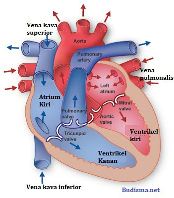
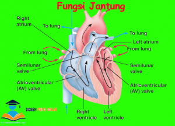

11 Gejala Penyakit Jantung yang Bisa Terlihat di Kulit dan Kuku Halaman all - Kompas.com
2021.06.08 01:06

Harian Kompas Kompas TV Live Radio Kompasiana.com Pasangiklan.com Gramedia.com Gramedia Digital GridOto.com Bolasport.com Grid.id Kontan.co.id Kgmedia.id Langganan Kompas.id MASUK News Nasional Megapolitan Global Surat Pembaca Kilas Daerah Kilas Korporasi Kilas Kementerian Sorot Politik Kilas Badan Negara Kilas Parlemen Indeks Regional Medan Palembang Surabaya Makassar Balikpapan Samarinda Tren Health Food Resep Tips Kuliner Food News Food Story Galeri Edukasi Sekolah Perguruan Tinggi Pendidikan Khusus Beasiswa Skola Dunia Kuliah Kilas Pendidikan Parapuan Trending Topic Love & Life Wellness Fashion & Beauty Lady Boss Money Whats New Earn Smart Work Smart Spend Smart Smartpreneur Kilas BUMN Kilas Badan Kilas Transportasi Kilas Fintech Indeks Tekno APPS & OS Gadget Internet Hardware Business Galeri Indeks Lifestyle Eat Good Look Good Feel Good Sadar Stunting Homey Housing Decor Home Appliances Pets & Garden DIY Properti News Hunian Arsitektur Beranda Konsultasi Figur Tips Galeri 360 Indeks Sorot Properti Bola Liga Indonesia Liga Italia Liga Champions Liga Lain Liga Inggris Liga Spanyol Internasional Bundesliga Motogp Badminton Sports Indeks Travel Jalan Jalan Itinerary Travel Tips Travel Promo Travel Update Galeri Superapp Parekraf Ohayo Jepang Indeks Otomotif Motor Mobil Sport Niaga Komunitas Otopedia Sains Fenomena Kita Oh Begitu Halo Prof Prof Cilik Indeks Hype Seleb Musik Film Hits Ent! Indeks VIK Kolom JEO Images Foto Video Bagikan:
11 Gejala Penyakit Jantung yang Bisa Terlihat di Kulit dan Kuku
Komentar: HEALTHTOPIK UNTUKMU:
#gatal di selangkangan #Penyakit ginjal #asam lambung #Gatal di selangkangan #vagina kering #Menstruasi #Asam lambung #penyakit jantung #penyakit menular seksual #menghilangkan kutu rambutHome Health
Tumbuh bersama kekuatan mimpi perempuan Indonesia11 Gejala Penyakit Jantung yang Bisa Terlihat di Kulit dan Kuku
Kompas.com - 01/06/2021, 12:02 WIB Bagikan: Komentar Thinkstock Ilustrasi kaki bengkak. Penulis Irawan Sapto Adhi | Editor Irawan Sapto AdhiKOMPAS.com – Tidak semua penyakit jantung menunjukkan gejala nyeri di sekitar dara.
Tanda peringatan penyakit jantung juga dapat muncul di kulit dan kuku kita.
Itulah sebabnya dokter kulit bisa menjadi dokter pertama yang memperhatikan bahwa kita menderita penyakit berbahaya ini.
Baca juga: 9 Gejala Penyakit Jantung yang Harus Diwaspadai
Berikut ini adalah beberapa gejala penyakit jantung yang bisa terlihat di kulit dan kuku untuk diwaspadai:
1. Bengkak di kaki dan tungkai bawah
Merangkum American Academy of Dermatology Association (AAD), bengkak di kaki dan tungkai bawah bisa menjadi tanda bahwa jantung kita tidak bekerja dengan benar.
Terima kasih telah membaca Kompas.com.
Dapatkan informasi, inspirasi dan insight di email kamu.
Daftarkan email
Banyak penyakit jantung menyebabkan cairan menumpuk di kaki dan tungkai bawah.
Saat cairan menumpuk, Anda mungkin melihat pembengkakan yang bisa meluas hingga ke kaki bagian atas dan selangkangan.
Nama medis dari gejala penyakit jantung ini adalah edema (istilah medis untuk pembengkakan).
2. Warna biru atau ungu di kulit
Warna biru atau ungu di kuli Anda bisa menjadi tanda adanya penyumbatan di pembuluh darah.
Saat Anda sangat kedinginan, kulit Anda bisa membiru atau ungu.
Sementara, jika area kulit Anda berwarna biru atau ungu padahal kondisi lingkungan normal atau hangat, itu bisa jadi pertanda darah Anda tidak mendapatkan cukup oksigen.
Baca juga: Benarkah Mendengkur Bisa Jadi Gejala Penyakit Jantung?
Tanpa pengobatan, kekurangan oksigen ini dapat menyebabkan kulit dan jaringan di bawahnya pada akhirnya mati.
Dalam bahasa medis, gejala penyakit jantung ini bisa dikenal sebagai sianosis (mengacu pada warna kebiruan pada kulit)
3. Garis biru atau ungu di kulit
Beberapa orang mungkin akan melihat garis biru atau ungu di kulit saat merasa kedinginan. Saat kulit menghangat, pola ini menghilang.
Garis biru dan ungu di kulit juga bisa muncul sebagai efek samping dari minum obat tertentu.
Sayangnya, garis biru dan ungu di kulit bisa pula menjadi tanda penyakit yang disebut sindrom emboli kolesterol.
Penyakit ini terjadi ketika arteri kecil tersumbat.
Baca juga: 8 Tanda Kolesterol Tinggi yang Sering Tak Disadari
Penyumbatan dapat menyebabkan kerusakan jaringan dan organ.
Jadi sebaiknya Anda memeriksakan diri ke dokter untuk mengetahui penyebab pasti munculnya garis biru atau ungu di kulit seperti jaring.
Nama medis untuk munculnya pola mirip jaring di kulit ini adalah livedo reticularis.
4. Pertumbuhan plak kekuningan seperti lilin di kulit
Jika Anda melihat pertumbuhan plak kekuningan pada kulit Anda, Anda mungkin memiliki timbunan kolesterol di bawah kulit Anda.
Endapan tanpa rasa sakit ini dapat muncul di banyak area, termasuk sudut mata, garis di telapak tangan, atau di punggung kaki bagian bawah.
Jika Anda melihat pertumbuhan ini di area kulit Anda, temui dokter Anda.
Anda mungkin perlu tes kolesterol atau tes medis lainnya.
Kadar kolesterol yang tidak sehat membutuhkan pengobatan, yang dapat mencegah penyakit jantung yang mengancam jiwa.
Mengontrol kadar kolesterol Anda juga dapat membantu membersihkan pertumbuhan plak kekuningan itu di kulit Anda.
Baca juga: 3 Gejala Trigliserida Tinggi yang Perlu Diwaspadai
Jika pertumbuhannya tidak jelas, dokter kulit dapat mengobatinya.
Nama medis untuk timbunan kolesterol di kelopak mata adalah xanthelasma, sedangkan timbunan kolesterol di ke tempat lain di kulit dapat disebut sebagai xanthoma.
5. Kelompok benjolan yang tiba-tiba muncul di kulit
Munculnya kelompok benjolan yang tiba-tiba muncul di kulit bisa menjadi tanda Anda memiliki kadar kolesterol tinggi atau diabetes.
Benjolan itu dapat dikelilingi oleh cincin merah dan mungkin berwarna kuning atau cokelat kekuningan
Benjolan ini sebenarnya adalah timbunan lemak kolesterol yang disebabkan oleh kadar trigliserida (jenis kolesterol) yang sangat tinggi di dalam darah.
Perawatan sangat penting untuk menurunkan trigliserida dan mengobati kondisi medis yang serius, seperti penyakit jantung yang disebabkan oleh kadar kolesterol tinggi.
Nama medis untuk munculnya banyak timbunan lemak kolesterol secara tiba-tiba ini adalah xanthoma erupsi.
Baca juga: 13 Cara Menurunkan Trigliserida Tinggi Secara Alami
6. Kuku melengkung ke bawah dan ujung jari bengkak
Kuku melengkung ke arah bawah dan ujung jari bengkak bisa menjadi tanda Anda mengalami infeksi jantung, penyakit jantung, atau masalah paru-paru.
Bagi banyak orang, tanda-tanda ini mungkin tidak berbahaya.
Meski demikian, jika jari tangan dan kuku Anda terlihat seperti itu, sebaiknya Anda mencari tahu apakah Anda memiliki kondisi medis, seperti penyakit paru-paru atau masalah jantung.
Istilah medis ntuk menggambarkan kondisi kuku yang melengkung kea rah bawah dan jari bengkak adalah clubbing.
7. Garis merah atau ungu di bawah kuku
Kebanyakan orang yang melihat garis-garis merah atau ungu di bawah kuku karena mereka telah melukai kuku dalam beberapa cara.
Jika Anda tidak ingat pernah melukai kuku, Anda baru mungkin perlu menemui dokter.
Pasalnya, garis-garis ini bisa menjadi tanda penyakit jantung atau kondisi lain.
Jika itu merupakan tanda penyakit jantung, orang-orang cenderung mengalami beberapa gejala lai, seperti demam tinggi dan detak jantung yang lemah atau tidak teratur.
Baca juga: Kenali Beragam Penyebab Kuku Rapuh dan Mudah Patah
8. Benjolan yang menyakitkan di jari tangan, kaki, atau keduanya
Dilansir dari Health Line , benjolan yang menyakitkan di jari tangan, kaki, atau keduanya bisa menjadi tanda infeksi di jantung atau pembuluh darah Anda.
Jika Anda mengalami infeksi jantung yang dikenal sebagai endokarditis infektif, benjolan yang menyakitkan ini dapat berkembang di jari tangan, kaki, atau keduanya.
Benjolan tersebut bisa bertahan selama beberapa jam hingga beberapa hari.
Sementara benjolan dapat hilang dengan sendirinya, penderita mungkin tetap membutuhkan pengobatan untuk infeksinya.
Karena infeksi ini disebabkan oleh bakteri, antibiotik sering kali dapat mengobatinya. Terkadang, pembedahan juga diperlukan.
Baca juga: 4 Cara Mencegah Penyakit Jantung Bawaan Pada Anak
9. Perubahan warna kecokelatan atau kemerahan di kulit, terutama di telapak tangan atau telapak kaki
Perubahan warna kecokelatan atau kemerahan di kulit, terutama di telapak tangan atau telapak kaki bisa juga menjadi tanda adanya infeksi di jantung atau pembuluh darah Anda (endokarditis infektif).
Munculnya bercak ini tidak menimbulkan rasa sakit. Bercak ini biasnaya akan hilang tanpa pengobatan, biasanya dalam beberapa hari atau minggu.
Namun, infeksi tetap membutuhkan pengobatan.
Nama medis untuk gejala ini adalah lesi Janeway, yang dinamai menurut nama dokter penemu asal Amerika, Theodore Caldwell Janeway.
10. Ruam tidak gatal (bintik datar dengan tepi agak menonjol) dan demam
Gejala ini bisa menjadi tanda bahwa Anda mengalami demam rematik.
Jika anak Anda menderita radang tenggorokan, penting untuk segera mengobatinya.
Jika tidak ditangani dengan cepat, masalah medis lain dapat berkembang.
Salah satu masalah tersebut adalah demam rematik.
Demam rematik cenderung masih umum terjadi di negara berkembang.
Ketika seorang anak mengalami demam rematik, hal itu dapat menyebabkan penyakit jantung seumur hidup.
Demam rematik merupakan penyebab utama penyakit jantung pada anak-anak.
Baca juga: 9 Gejala Awal Rematik yang Perlu Diwaspadai
11. Bibir dan lidah kering, kemerahan, serta pecah-pecah
Ketika seorang anak mengalami ruam, demam, dan bibir sangat kering yang dapat pecah-pecah dan berdarah, kemungkinan besar penyakit Kawasaki adalah penyebabnya.
Penyakit yang menyerang pembuluh darah ini biasanya berkembang pada anak-anak yang berusia antara 6 bulan sampai 5 tahun.
Meskipun penyakit Kawasaki dapat hilang dengan sendirinya dalam 12 hari tanpa pengobatan, penyakit ini dapat menyebabkan efek samping yang serius, seperti penyakit jantung.
Nama lain untuk penyakit kawasaki adalah sindrom kelenjar getah bening mukokutan.
Artikel ini merupakan bagian dari Parapuan.
Parapuan adalah ruang aktualisasi diri perempuan untuk mencapai mimpinya.
Kompas.com Play
Lihat SemuaIkut Survey! Dapatkan Voucher Go-pay
Dapatkan Ipad Air 3, Samsung M31, dan E-voucher
Bantu kami jadi lebih baik lagi!
Teka-Teki Santuy Seputar Kode Plat Di Indonesia
TTS - Teka Teki Santuy Edisi Istilah Kata
Teka Teki Santuy Seputar Singkatan Umum
Sumber American Academy of Dermatology , Health Line
Tag: penyakit jantung serangan jantung gejala penyakit jantung edema ruam kulit
Berita Terkait
9 Gejala Awal Rematik yang Perlu Diwaspadai
7 Gejala Demam Rematik dan Penyebabnya
8 Makanan Pantangan untuk Penderita Rematik
13 Makanan untuk Meredakan Rematik
13 Cara Mengobati Rematik Secara Alami
Berita Terkait
9 Gejala Awal Rematik yang Perlu Diwaspadai
7 Gejala Demam Rematik dan Penyebabnya
8 Makanan Pantangan untuk Penderita Rematik
13 Makanan untuk Meredakan Rematik
13 Cara Mengobati Rematik Secara Alami
Rekomendasi untuk anda Powered by Jixie mencari berita yang dekat dengan preferensi dan pilihan Anda. Kumpulan berita tersebut disajikan sebagai berita pilihan yang lebih sesuai dengan minat Anda. HEALTH 15 Gejala Penyakit Ginjal yang Perlu INFO-PRODUK Fakta Viagra, Obat Kuat yang Disebut UMUM Rekomendasi Makanan Enak untuk Kesehatan Jantung, HEALTH 10 Penyebab Kulit Kepala Gatal dan HEALTH 10 Masalah Kulit yang Sering Dialami HEALTH 4 Manfaat Kulit Semangka bagi Kesehatan, HEALTH 3 Ciri-ciri Kanker Kulit sesuai Jenis HEALTH 5 Gejala Penyakit Autoimun yang Umum KomentarTulis komentar dengan menyertakan tagar #JernihBerkomentar dan #MelihatHarapan di kolom komentar artikel Kompas.com. Menangkan E-Voucher senilai Jutaan Rupiah dan 1 unit Smartphone .
Syarat & Ketentuan Kolom komentar masih kosong Berkomentarlah secara bijaksana dan bertanggung jawab. Komentar sepenuhnya menjadi tanggung jawab komentator seperti diatur dalam UU ITE Kirim Mengirim Terima kasih. Kami sudah menerima laporan Anda. Kami akan menghapus komentar yang bertentangan dengan Panduan Komunitas dan UU ITE. OKTerkini Lainnya
Gejala Kencing Nanah pada Pria dan Wanita yang Perlu Diwaspadai
Health 07/06/2021, 22:22 WIBMemahami Apa Itu Keputihan dan Cara Merawat Vagina
Health 07/06/2021, 21:01 WIBGejala Kemandulan pada Pria dan Wanita
Health 07/06/2021, 19:35 WIBAwas, Dehidrasi Bisa Sebabkan Gangguan Kecemasan
Health 07/06/2021, 18:00 WIBTakut Saat Mendengar Suara Ambulans? Hati-hati Fonofobia
Health 07/06/2021, 16:38 WIB12 Cara Mengeluarkan Air dari Telinga
Health 07/06/2021, 15:03 WIBBisa Picu Sakit Kepala, Bagaimana Cara Terbaik Hentikan Asupan Kafein?
Health 07/06/2021, 13:31 WIB5 Penyakit yang Ditandai dengan Trombosit Rendah, Bukan Hanya DBD
Health 07/06/2021, 12:02 WIB5 Makanan dan Minuman yang Dapat Menurunkan Daya Ingat
Health 07/06/2021, 10:32 WIB3 Ciri-ciri Kanker Kulit sesuai Jenis yang Paling Umum
Health 07/06/2021, 09:01 WIB6 Penyebab Rambut Kering, Tak Hanya Karena Perawatan Asal-asalan
Health 07/06/2021, 07:31 WIB5 Cara Mudah Menghilangkan Kutu Rambut
Health 07/06/2021, 06:00 WIB14 Penyebab Penis Keluar Darah yang Perlu Diwaspadai
Health 06/06/2021, 22:29 WIBIni Makanan yang Sebaiknya Dikonsumsi saat Menstruasi
Health 06/06/2021, 21:00 WIB6 Bahan Alami Pengusir Nyamuk
Health 06/06/2021, 19:35 WIB 1 2 3 NextTerpopuler
1Gatal di Selangkangan: Gejala, Penyebab, dan Penanganannya
Dibaca 492.024 kali 25 Tanda Awal Penyakit Ginjal yang Harus Diwaspadai
Dibaca 135.881 kali 35 Cara Mudah Menghilangkan Kutu Rambut
Dibaca 18.673 kali 4Sama-sama Olahan Kedelai, Mana yang Lebih Sehat Tempe atau Tahu?
Dibaca 14.602 kali 5Sudah Mendapatkan Vaksin Covid-19, Amankah Melakukan Jabat Tangan?
Dibaca 9.537 kaliBisa Mati, Jangan Mandikan Anak Kucing yang Baru Berusia 2 Bulan Begini Cara Tepat Membersihkannya
Bakal Jadi Pasangan yang Bucin, 4 Zodiak ini Cocok Menjalin Hubungan Dengan Sagitarius
Kunjungi kanal-kanal Sonora.id
Motivasi
Fengshui
Tips Bisnis
Kesehatan
Now Trending
Jokowi Perintahkan Percepatan Vaksinasi Covid-19, Jangan Ada Stok Disimpan
Viral Rencana Mogok Massal Driver Gojek, Ketua Presidium: Belum Pasti
Gandeng FBI, Polisi Buru Otak Pelaku Scammer yang Curi Rp 875 Milliar dari Bansos Covid-19 Amerika
Klasemen Kualifikasi Piala Dunia 2022 Zona Asia Usai Indonesia Kalah dari Vietnam
Waspada, 8 Daerah di Jateng Sudah Berstatus Zona Merah Covid-19
Link Live Streaming Timnas Indonesia Vs Vietnam, Kickoff 23.45 WIB
Belasan Pemotor Ducati Kena Tilang di Senayan, Ini Penjelasan Polisi
Hasil Timnas Indonesia Vs Vietnam, Garuda Babak Belur Dihajar 4 Gol
komentar di artikel lainnya 10 Penyebab Kulit Kepala Gatal dan Cara Mengatasinya https://health.kompas.com/read/2021/05/31/193100468/10-penyebab-kulit-kepala-gatal-dan-cara-mengatasinya https://asset.kompas.com/crops/rY_38lBBgsP0_rW5kYbtDCWDur4=/0x0:1000x667/195x98/data/photo/2019/09/18/5d819e3a3bc22.jpgMungkin Anda melewatkan ini
10 Penyebab Kulit Kepala Gatal dan Cara Mengatasinya
10 Gejala Kekurangan Zat Besi yang Perlu Diwaspadai
9 Penyebab Trombosit Turun, Tak Selalu DBD (Demam Berdarah)
6 Gejala Stroke Iskemik dan Penyebabnya
4 Cara Mudah Hilangkan Stretch Mark
Close Ads X Jelajahi Kompas.com Bola Tekno Otomotif Internasional News Nasional Megapolitan Tren Health Entertainment Money Sains Regional Properti Lifestyle Travel Edukasi Food Homey Parapuan Images VIK Ohayo Jepang Kolom JEO Kompas Video Skola Artikel Terpopuler Artikel Terkini Topik Pilihan Artikel Headline Penghargaan dan sertifikat: Kabar Palmerah About Us Advertise Policy Pedoman Media Siber Career Contact Us Copyright 2008 - 2021 PT. Kompas Cyber Media ( Kompas Gramedia Digital Group ). All rights reserved.- Penyakit Penyakit Jantung - Gejala, Penyebab, Pengobatan .
- Jantung - Gejala, Penyakit, dan Cara Mengobati | Halodoc.com
- Jangan Abaikan Gejala-Gejala Jantung Bengkak Berikut Ini .
- 11 Gejala Penyakit Jantung yang Bisa Terlihat di Kulit dan .
- Jantung - Wikipedia bahasa Indonesia, ensiklopedia bebas
- Penyakit Jantung - Pengertian, Gejala, Penyebab, Faktor .
- Mengatasi Sakit Jantung dan Serangan Jantung – Pemerintah .
- Waspada dan Kenali Lebih Jauh Ciri-Ciri Sakit Jantung .
- Patut waspada, inilah 4 ciri-ciri penyakit jantung - Kesehatan
- Tempat-Tempat Nyeri Pada Gangguan Jantung - Direktorat .
- Penyakit Penyakit Jantung - Gejala, Penyebab, Pengobatan .
adalah organ terpenting dalam tubuh manusia dan mempunyai ukuran sebesar kapalan tangan. berfungsi memompa dan menyebarkan darah . - Jantung - Gejala, Penyakit, dan Cara Mengobati | Halodoc.com
Di Indonesia sendiri, penyakit kardiovaskuler, stroke dan penyakit koroner adalah penyebab utama kematian yang menyebabkan lebih dari 470.000 . - Jangan Abaikan Gejala-Gejala Jantung Bengkak Berikut Ini .
(bahasa Latin: cor) adalah sebuah rongga, rongga organ berotot yang memompa darah lewat pembuluh darah oleh kontraksi berirama yang berulang. - 11 Gejala Penyakit Jantung yang Bisa Terlihat di Kulit dan .
7 hari yang lalu — - Jantung - Wikipedia bahasa Indonesia, ensiklopedia bebas
Tingginya angka kematian akibat penyakit , khususnya serangan , selayaknya menjadi perhatian masyarakat dan petugas kesehatan sehingga . - Penyakit Jantung - Pengertian, Gejala, Penyebab, Faktor .
Gejala paling umum dari penyakit coroner adalah angina atau angina pectoris yang juga dikenal sebagai nyeri dada. Angina dapat digambarkan . - Mengatasi Sakit Jantung dan Serangan Jantung – Pemerintah .
Gagal , merupakan suatu kegagalan otot untuk memompakan darah secara memadai ke seluruh tubuh. Aritmia, merupakan suatu gangguan . - Waspada dan Kenali Lebih Jauh Ciri-Ciri Sakit Jantung .
3 hari yang lalu — - Patut waspada, inilah 4 ciri-ciri penyakit jantung - Kesehatan
16 Okt 2020 — - Tempat-Tempat Nyeri Pada Gangguan Jantung - Direktorat .
7 Mei 2021 —
adalah organ terpenting dalam tubuh manusia dan mempunyai ukuran sebesar kapalan tangan. berfungsi memompa dan menyebarkan darah .
Di Indonesia sendiri, penyakit kardiovaskuler, stroke dan penyakit koroner adalah penyebab utama kematian yang menyebabkan lebih dari 470.000 .
(bahasa Latin: cor) adalah sebuah rongga, rongga organ berotot yang memompa darah lewat pembuluh darah oleh kontraksi berirama yang berulang.
7 hari yang lalu —
Tingginya angka kematian akibat penyakit , khususnya serangan , selayaknya menjadi perhatian masyarakat dan petugas kesehatan sehingga .
Gejala paling umum dari penyakit coroner adalah angina atau angina pectoris yang juga dikenal sebagai nyeri dada. Angina dapat digambarkan .
Gagal , merupakan suatu kegagalan otot untuk memompakan darah secara memadai ke seluruh tubuh. Aritmia, merupakan suatu gangguan .
3 hari yang lalu —
16 Okt 2020 —
7 Mei 2021 —
 